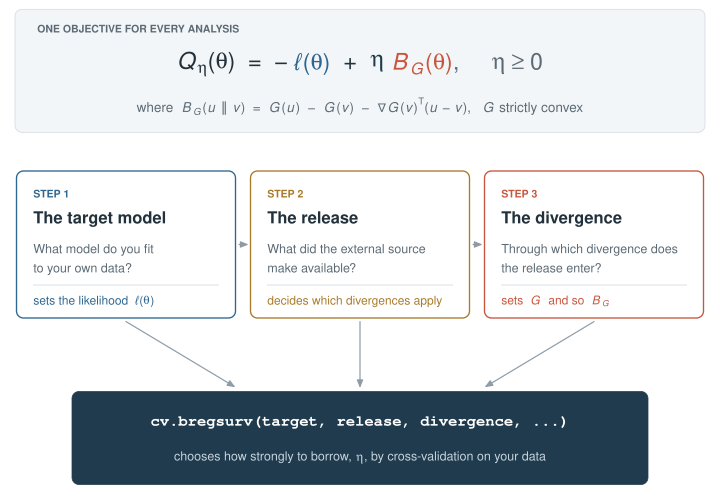
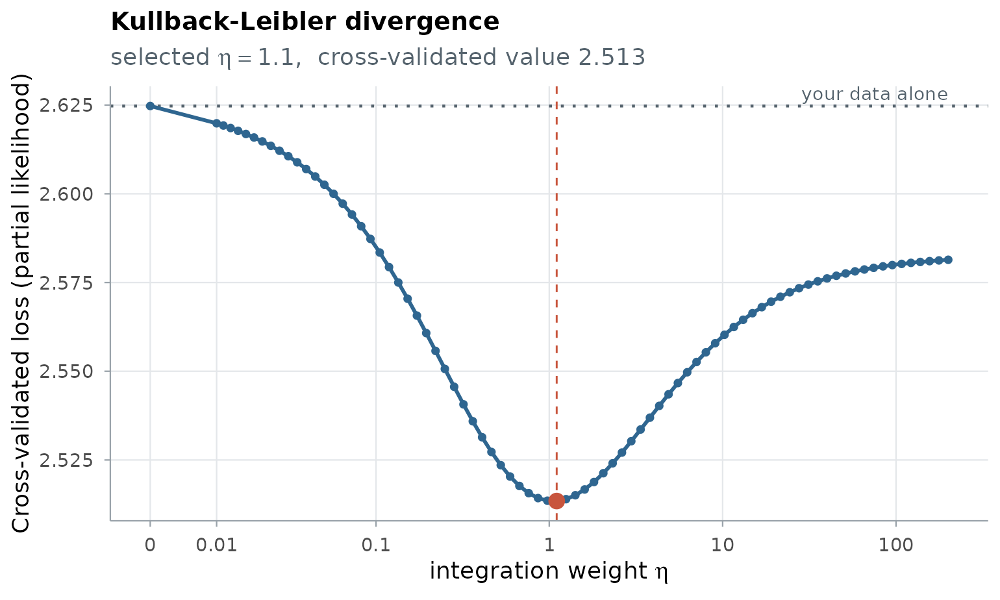
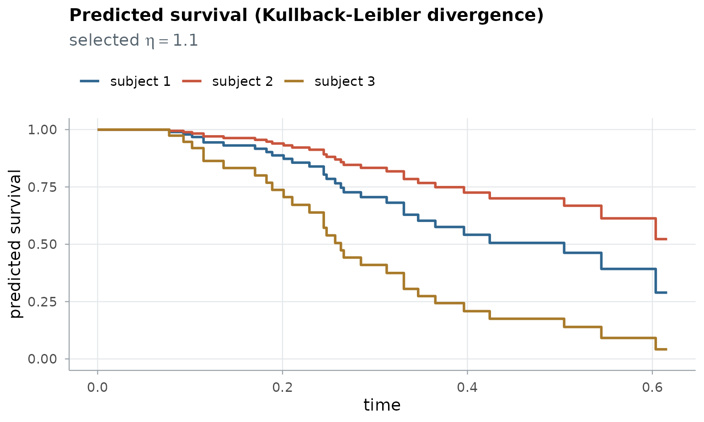
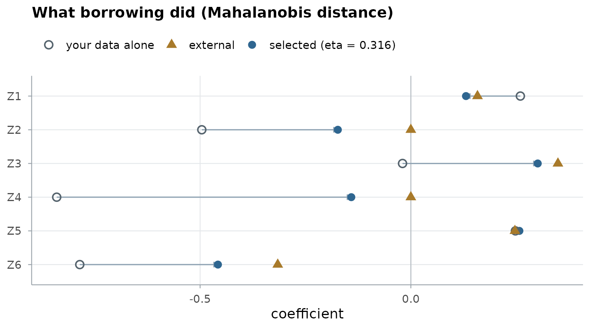
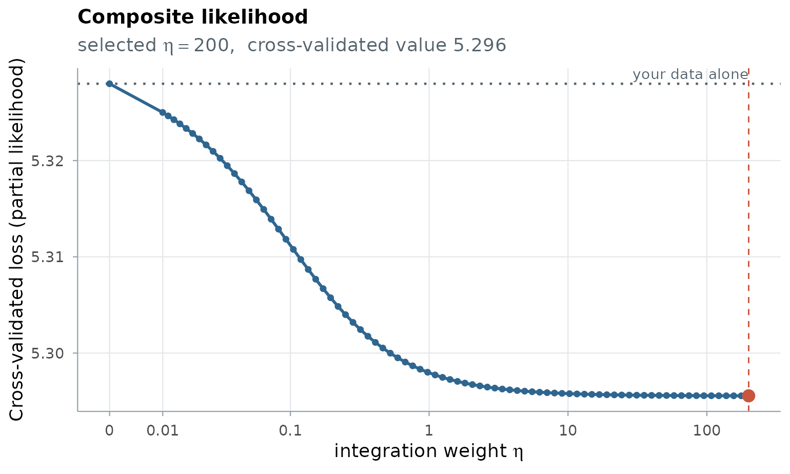
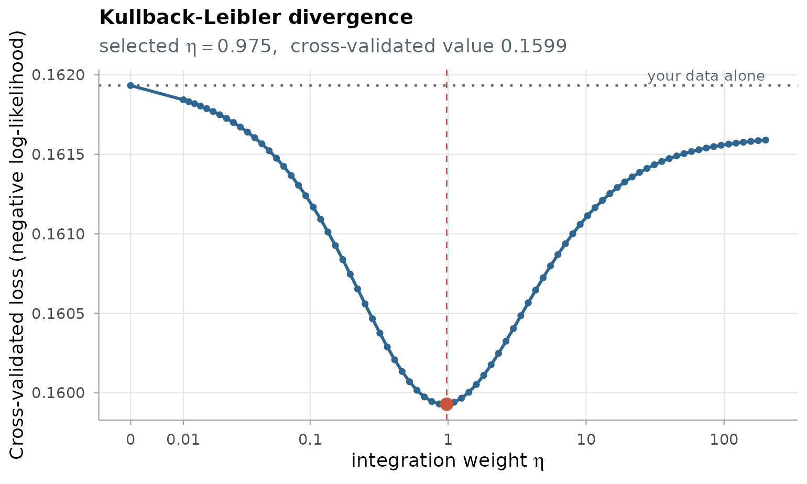
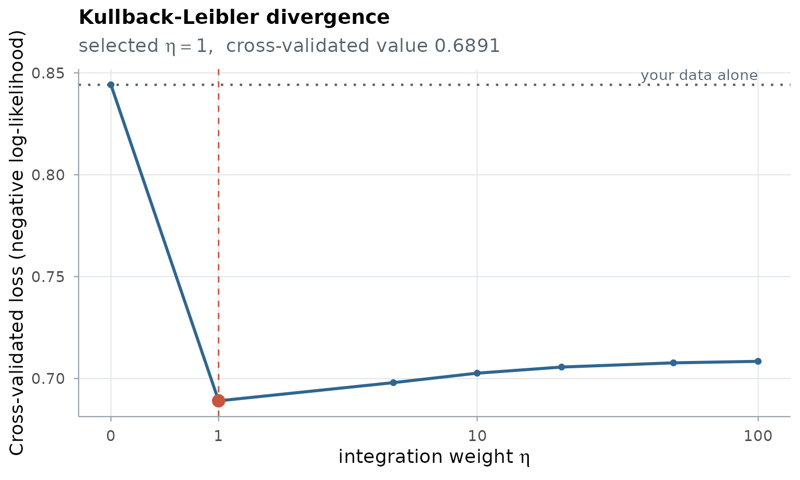
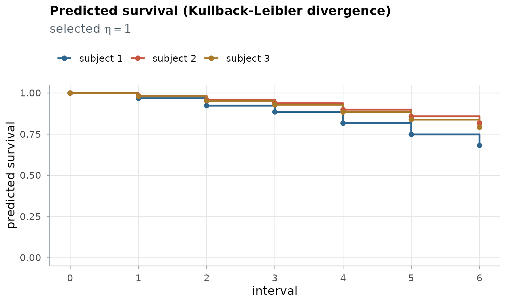
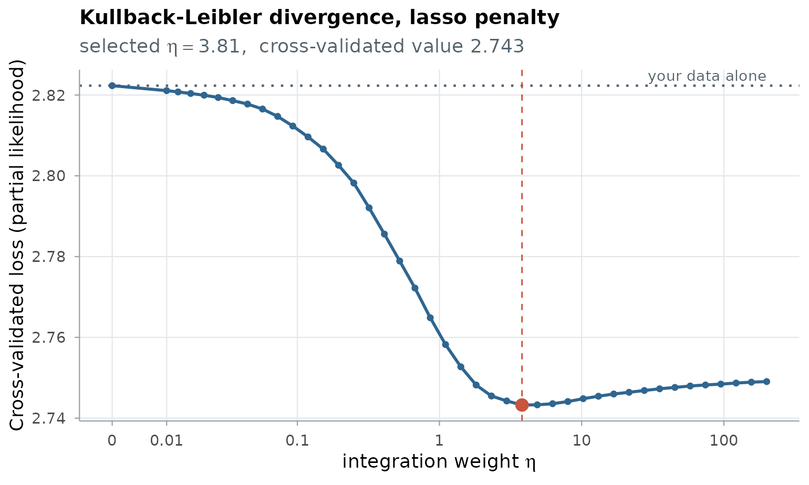
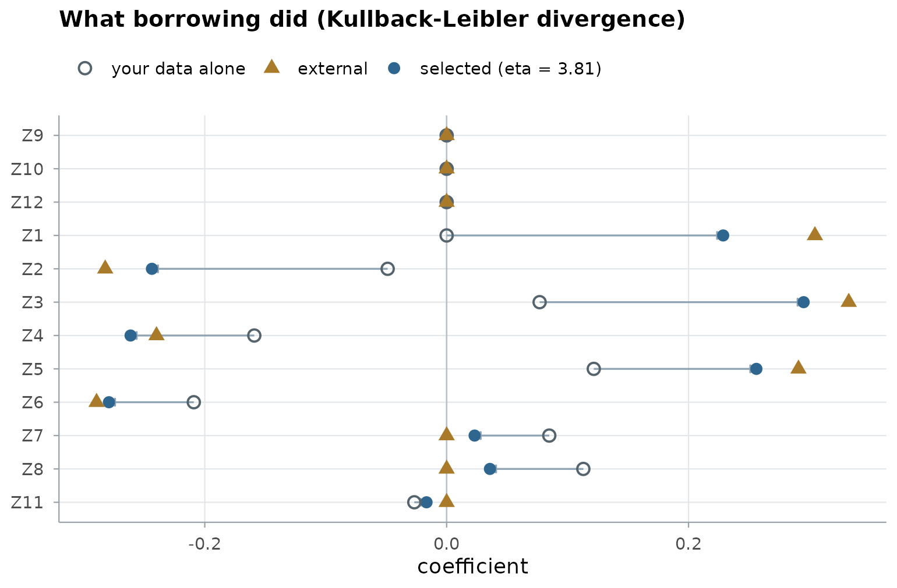

Get started
BregSurv.RmdBregSurv fits a time-to-event model to your data while
borrowing from an external source. Every analysis is one call with three
ingredients: the target model you fit, the
release the external source published, and the
divergence through which the release enters.
cv.bregsurv() then chooses how strongly to borrow, by
cross-validation on your data.
cv.bregsurv(target, release, divergence, ...)
The objective, and the three steps that set its terms: the target model, the release and the divergence.
Every fit minimizes the objective at the top: the negative log-likelihood \(\ell(\theta)\) of your data plus an integration weight \(\eta\) times a Bregman divergence \(B_G\) between your model and the external one. At \(\eta = 0\) the external source is ignored; the larger \(\eta\), the more you borrow. The three steps set the terms of the objective in turn, and Sections 1 to 3 below follow them: the target sets \(\ell(\theta)\), the release decides which divergences are possible, and the divergence sets \(B_G\).
1 The target
The target is the model you fit to your own data; it
sets the likelihood \(\ell(\theta)\).
You build it with a constructor that takes your data, one row per
subject, checks it (event indicators coded 0/1, positive times, one case
per matched set, no missing values), and stores it with the model’s
settings. A constructor fits nothing. Which one to use depends on how
your outcome was recorded; each has its own help page with every
argument (?target_cox, ?target_ncc, ?target_discrete).
1.1 Follow-up time and an event indicator: a Cox model
target_cox() takes the observed times, the event
indicator and the covariates, a numeric matrix or data frame with one
named column per covariate. The column names are how the external
information is matched to your covariates.
1.1.1 Without strata
ExampleData_lowdim is a simulated cohort of 100 patients
with six covariates, and an independent test cohort of 2,000:
data(ExampleData_lowdim)
tr <- ExampleData_lowdim$train
target_lowdim <- target_cox(time = tr$time, event = tr$status, z = tr$z)
target_lowdim
#> Target: Cox model
#> 100 subjects, 6 covariates, 29 events1.1.2 With strata
stratum = gives each stratum its own baseline hazard,
while the covariate effects are shared. The internal cohort of
ExampleData_indi has 500 patients in ten strata (think of
ten centres) and ten covariates:
data(ExampleData_indi)
int <- ExampleData_indi$internal
target_strata <- target_cox(time = int$time, event = int$status, z = int$z, stratum = int$stratum)
target_strata
#> Target: Cox model
#> 500 subjects, 10 covariates, 355 events, 10 stratatarget_strata is the same kind of object as
target_lowdim, a Cox target, built from other data and with
strata. ExampleData_indi also holds an external cohort’s
individual records, which Section 2.1.1
turns into a release. Tied event times are set by ties =
(Section 4.2).
1.2 Matched sets: a nested case–control design
target_ncc() takes the case indicator, the matched set
of each row and the covariates. Every matched set must hold exactly one
case:
data(ExampleData_cc_lowdim)
cc <- ExampleData_cc_lowdim$train
target_matched <- target_ncc(case = cc$y, set = cc$stratum, z = cc$z)
target_matched
#> Target: nested case-control design
#> 1000 subjects in 200 matched sets, 6 covariates1.3 Follow-up recorded in intervals: a discrete-time model
target_discrete() takes the last interval each subject
was at risk in, the event indicator (1 when the event happened in that
interval) and the covariates. ExampleData_discrete follows
150 patients over six intervals, for instance years after
transplant:
data(ExampleData_discrete)
dt <- ExampleData_discrete$train
target_interval <- target_discrete(interval = dt$interval, event = dt$status, z = dt$z)
target_interval
#> Target: discrete-time model, 6 intervals, cloglog link
#> 150 subjects, 6 covariates, 32 eventsThe default link is the complementary log-log, under which the
coefficients are log hazard ratios, as a Cox model’s are;
link = "logit" is also available.
2 The release
The release is what the external source made
available to you: individual records, a fitted model with or without its
uncertainty, a risk score without survival probabilities, or survival
probabilities. You do not choose it, but its form decides which
divergences can use it in Section 3. A release constructor stores it and
checks it; covariates are matched to the target’s by their names. Each
constructor has its own help page (?release_records,
?release_coef,
?release_score,
?release_model).
2.1 Individual records
Another cohort’s data, subject by subject, with the target’s covariate names and outcomes in the target’s design.
2.1.1 For a Cox target
The records take time and event, and
optionally stratum. The external cohort of
ExampleData_indi has 2,000 patients in ten strata:
ext <- ExampleData_indi$external
records_cox <- release_records(ext$z, time = ext$time, event = ext$status, stratum = ext$stratum)
records_cox
#> Release: individual records (Cox design), 2000 subjects, 10 strata2.1.2 For a nested case–control target
The records take case and set, as the
target does:
data(ExampleData_cc_indi)
ecc <- ExampleData_cc_indi$external
records_matched <- release_records(ecc$z, case = ecc$y, set = ecc$stratum)
records_matched
#> Release: individual records (nested case-control design), 2500 subjects2.1.3 For a discrete-time target
The records take interval and event, on the
target’s intervals. ExampleData_discrete holds a registry’s
records of 1,000 patients:
reg <- ExampleData_discrete$external
records_discrete <- release_records(reg$z, interval = reg$interval, event = reg$status)
records_discrete
#> Release: individual records (discrete-time design), 1000 subjects2.2 A fitted model, with or without its uncertainty
A published model’s coefficients, named by covariate; covariates the
model does not include are set to 0. Its uncertainty is the precision
matrix Q of the coefficients (the inverse of their
covariance matrix), when it was published.
2.2.1 Without its uncertainty
ExampleData_lowdim$beta_external_fair
#> Z1 Z2 Z3 Z4 Z5 Z6
#> 0.1580961 0.0000000 0.3489722 0.0000000 0.2469009 -0.3157974
model_lowdim <- release_coef(ExampleData_lowdim$beta_external_fair)
model_lowdim
#> Release: a fitted model, 6 coefficients, without its uncertainty2.2.2 With its uncertainty
The registry of ExampleData_discrete published its
coefficients for five of the six covariates, with their precision
matrix:
model_registry <- release_coef(ExampleData_discrete$beta_external, Q = ExampleData_discrete$Q_external)
model_registry
#> Release: a fitted model, 5 coefficients, with its uncertainty (precision matrix)2.3 A risk score without survival probabilities
When the external model is available only through its risk score, its
score for each of your patients is the release, in the order of your
data, on the scale of a linear predictor.
ExampleData_lowdim$score_external$train holds an external
risk score for each of the 100 patients:
score_lowdim <- release_score(ExampleData_lowdim$score_external$train)
score_lowdim
#> Release: a risk score for 100 subjects, without survival probabilities2.4 Survival probabilities
An external model that gives survival probabilities: its coefficients
together with the increments of its baseline cumulative hazard over your
intervals (baseline), or, with hazard =, its
interval hazards for each of your patients directly. A discrete-time
target needs this form for the Kullback–Leibler divergence.
survival_registry <- release_model(beta = ExampleData_discrete$beta_external,
baseline = ExampleData_discrete$baseline_external)
survival_registry
#> Release: survival probabilities, 5 coefficients with a baseline hazard over 6 intervals3 The divergence
The divergence is how the release enters the objective: the Bregman divergence \(B_G\). There are three, and each needs a different form of release:
divergence |
what it compares | the release it needs |
|---|---|---|
"kl": Kullback–Leibler |
the distributions the two models predict for your subjects | the external model’s predictions: a risk score, a fitted model or survival probabilities (on a discrete-time target, survival probabilities only) |
"mahalanobis": Mahalanobis |
your coefficients with the external ones, weighted by their uncertainty (the Euclidean distance without it) | a fitted model, with or without its uncertainty |
"composite": composite likelihood |
adds the external records’ own log-likelihood, weighted by \(\eta\) | individual records |
3.1 Cox model and a risk score without survival probabilities: Kullback–Leibler
The Kullback–Leibler divergence compares the two models through the probabilities they give each patient of failing first at every event time, so the external model enters through its risk score alone, and may be a model of any form.
fit_score <- cv.bregsurv(target_lowdim, score_lowdim, divergence = "kl")
fit_score
#> Target: Cox model
#> Divergence: Kullback-Leibler
#> Selected: eta = 1.104
#> CV V&VH: 2.51343 (5 folds, seed 20260818)
#> Engine: cv.coxkl
#>
#> Coefficients:
#> Z1 Z2 Z3 Z4 Z5 Z6
#> 0.1950 -0.1987 0.0077 -0.3929 0.2768 -0.3619The printout gives the selected \(\eta\), the cross-validated loss at that
\(\eta\) (lower is better), the
estimator that did the fit (here cv.coxkl), and the
coefficients. plot() draws the cross-validated loss along
\(\eta\):
plot(fit_score)
The dotted line is your data alone, \(\eta = 0\). The curve dips below it: borrowing from the risk score predicts your patients better than your data alone, and the red point marks the selected \(\eta\).
The fit is used like any survival model, for instance to predict survival for new patients:
te <- ExampleData_lowdim$test
predict(fit_score, newz = te$z[1:3, ], type = "survival", times = c(0.1, 0.2, 0.3))
#> t=0.1 t=0.2 t=0.3
#> [1,] 0.9676900 0.8875535 0.7055564
#> [2,] 0.9829626 0.9394953 0.8332007
#> [3,] 0.9194451 0.7371009 0.4098990
plot(fit_score, type = "survival", newz = te$z[1:3, ])
3.2 Cox model and a fitted model without its uncertainty: Kullback–Leibler or Mahalanobis
A fitted model supports two divergences; without its uncertainty, the
Mahalanobis distance is the Euclidean distance between the coefficients.
Every call uses the same cross-validation partition (the
seed is fixed by default), so their losses, and the loss of
your data alone, compare directly:
fit_kl <- cv.bregsurv(target_lowdim, model_lowdim, divergence = "kl")
fit_maha <- cv.bregsurv(target_lowdim, model_lowdim, divergence = "mahalanobis")
own <- cv.bregsurv(target_lowdim)
round(c(your_data_alone = own$value, kullback_leibler = fit_kl$value, mahalanobis = fit_maha$value), 3)
#> your_data_alone kullback_leibler mahalanobis
#> 2.625 2.506 2.511The coefficient plot shows what borrowing did to each coefficient: from your data alone (open circle) toward the published value (triangle), to the selected fit (filled circle).
plot(fit_maha, type = "coefficients")
3.3 Cox model and individual records: composite likelihood
The individual records enter with their own likelihood, weighted by \(\eta\): the two cohorts share the coefficients and keep their own baseline hazards, here one for each stratum of each cohort.
fit_comp <- cv.bregsurv(target_strata, records_cox, divergence = "composite")
fit_comp$eta
#> [1] 200
plot(fit_comp)
Here the external cohort comes from the same population as yours, so
the loss keeps falling as \(\eta\)
grows and the largest weight is selected. The same records can also
enter as a fitted model with its uncertainty, which
cv.bregsurv() obtains by fitting a Cox model to them:
fit_records_maha <- cv.bregsurv(target_strata, records_cox, divergence = "mahalanobis")
own_strata <- cv.bregsurv(target_strata)
round(c(your_data_alone = own_strata$value, composite = fit_comp$value,
mahalanobis = fit_records_maha$value), 3)
#> your_data_alone composite mahalanobis
#> 5.328 5.296 5.2963.4 Nested case–control design and a fitted model: Kullback–Leibler
On a matched design the Kullback–Leibler divergence compares the two models’ probabilities of which member of each set is the case, and the cross-validated loss is the conditional log-likelihood. The release is a fitted model without its uncertainty, built as in Section 2.2.1:
model_matched <- release_coef(ExampleData_cc_lowdim$beta_external)
fit_matched <- cv.bregsurv(target_matched, model_matched, divergence = "kl")
fit_matched
#> Target: nested case-control design
#> Divergence: Kullback-Leibler
#> Selected: eta = 0.9755
#> CV loss: 0.159928 (5 folds, seed 20260818)
#> Engine: cv.ncckl
#>
#> Coefficients:
#> Z1 Z2 Z3 Z4 Z5 Z6
#> 0.7965 -1.0175 1.0714 -0.7200 0.8137 -1.0163
plot(fit_matched)
3.5 Discrete time and survival probabilities: Kullback–Leibler
On a discrete-time target the Kullback–Leibler divergence compares the two models’ hazards in every interval, so it needs the registry’s survival probabilities:
fit_interval <- cv.bregsurv(target_interval, survival_registry, divergence = "kl")
fit_interval
#> Target: discrete-time model
#> Divergence: Kullback-Leibler
#> Selected: eta = 1
#> CV loss: 0.689057 (5 folds, seed 20260818)
#> Engine: cv.discretekl
#>
#> Coefficients:
#> Z1 Z2 Z3 Z4 Z5 Z6
#> 0.6440 -0.5637 0.6848 -0.6388 0.2928 -0.0532
plot(fit_interval)
plot(fit_interval, type = "survival", newz = ExampleData_discrete$test$z[1:3, ])
The registry’s fitted model with its uncertainty, and its individual records, support the other two divergences on the same target, and every discrete-time fit is scored by the same held-out log-likelihood:
fit_interval_maha <- cv.bregsurv(target_interval, model_registry, divergence = "mahalanobis")
fit_interval_comp <- cv.bregsurv(target_interval, records_discrete, divergence = "composite")
own_interval <- cv.bregsurv(target_interval)
round(c(your_data_alone = own_interval$value, kullback_leibler = fit_interval$value,
mahalanobis = fit_interval_maha$value, composite = fit_interval_comp$value), 3)
#> your_data_alone kullback_leibler mahalanobis composite
#> 0.844 0.689 0.815 0.8134 Further topics
4.1 Many covariates: a penalty
penalty = "lasso" (or "ridge", or
"enet" with alpha) penalizes the coefficients.
A penalty path is built for every \(\eta\) and the two are chosen together; the
curve shows each \(\eta\) at its best
penalty. ExampleData_highdim has 50 covariates for 200
patients, of which six matter:
data(ExampleData_highdim)
hd <- ExampleData_highdim$train
target_hd <- target_cox(time = hd$time, event = hd$status, z = hd$z)
fit_lasso <- cv.bregsurv(target_hd, release_coef(ExampleData_highdim$beta_external),
divergence = "kl", penalty = "lasso")
c(eta = fit_lasso$eta, lambda = fit_lasso$lambda, nonzero = sum(coef(fit_lasso) != 0))
#> eta lambda nonzero
#> 3.807307877 0.006098762 21.000000000
plot(fit_lasso)

4.2 Tied event times
When follow-up is recorded on a coarse grid, as at scheduled visits,
many events share a time. ExampleData_ties holds such a
cohort. ties = "breslow" uses Breslow’s approximation for
the tied times, with every divergence and penalty;
ties = "exact" uses Cox’s exact likelihood, with the
Kullback–Leibler divergence and no penalty.
data(ExampleData_ties)
ti <- ExampleData_ties$train
target_ties <- target_cox(time = ti$time, event = ti$status, z = ti$z, ties = "breslow")
target_ties
#> Target: Cox model
#> 100 subjects, 6 covariates, 29 events
#> tied event times: breslow
fit_ties <- cv.bregsurv(target_ties, release_coef(ExampleData_ties$beta_external), divergence = "kl")
fit_ties$eta
#> [1] 2.3204194.3 A fit at a given weight
bregsurv() takes the same ingredients and fits at an
\(\eta\) you choose, without
cross-validation:
4.4 The estimators behind the call
On a linear target, cv.bregsurv() hands the fit to one
of the package’s estimators, named in its engine (for
example cv.coxkl, cv.discrete_MDTL,
cv.ncckl), and returns exactly its result in
fit. The estimators can be called directly for options the
interface does not expose, such as stability selection and bagging; see
The estimators behind each divergence.
5 Where to go next
- The framework: the objective, and why each release supports the divergences it does.
-
The help page of
cv.bregsurv(): every argument, which divergences each release supports on each target, and the estimator each combination calls. - Discrete-time and neural targets, including neural-network risk scores.
- The estimators behind each divergence.